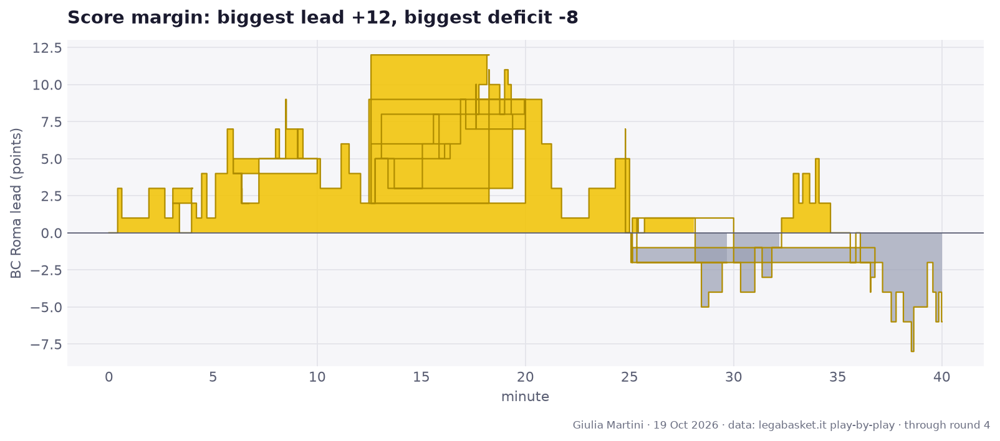
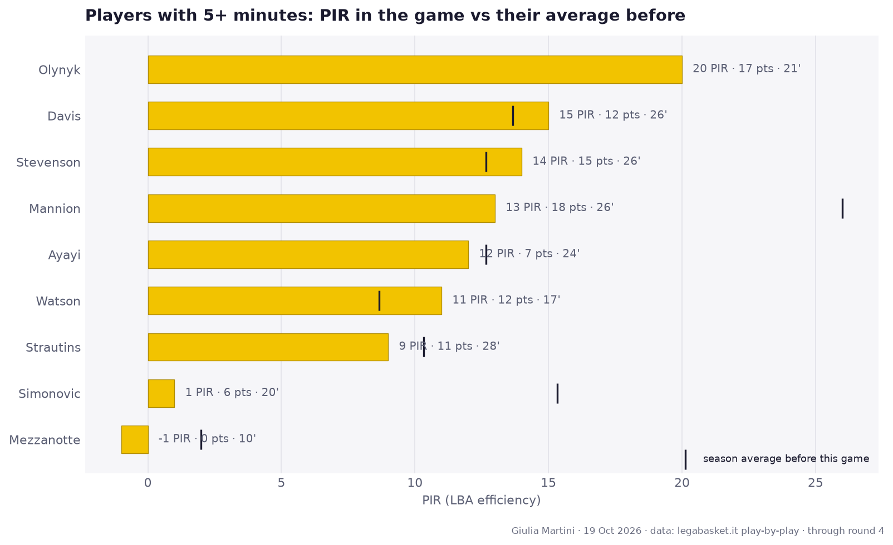
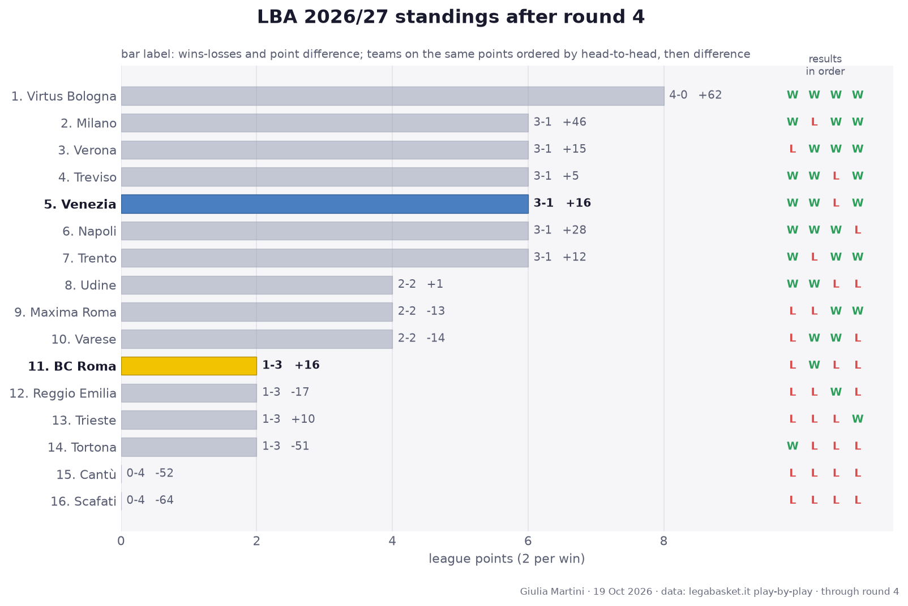
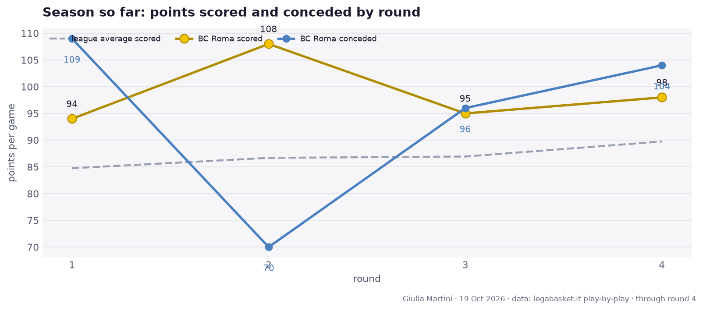

✎ Edit the text of this page opens its markdown file on GitHub; once saved, the site is rebuilt within a few minutes
BC Roma lost to Venezia, 98-104
Round 4 · Saturday 17 October 2026 · Palazzetto dello Sport, Roma · 2206 spectators
Record: 1-3 · 11th in the standings
Author: Giulia Martini
The game in numbers
| Q1 | Q2 | Q3 | Q4 | Final | |
|---|---|---|---|---|---|
| BC Roma | 18 | 14 | 29 | 37 | 98 |
| Venezia | 14 | 16 | 33 | 41 | 104 |

Team numbers
| BC Roma | Venezia | |
|---|---|---|
| Points | 98 | 104 |
| Possessions | 80.2 | 81.5 |
| Off. rating | 122.1 | 127.6 |
| eFG% | 64.8 | 54.9 |
| TOV% | 18.7 | 12.3 |
| OREB% | 24.2 | 36.6 |
| FT rate (FTA/FGA) | 32.8 | 45.8 |
| 3P | 17/33 | 9/27 |
| 2P | 16/31 | 26/45 |
| FT | 15/21 | 25/33 |
| Assists | 17 | 20 |
| Turnovers | 15 | 10 |
| Rebounds | 34 | 40 |
eFG% = (2P + 1.5 × 3P) / FGA · TOV% = turnovers per 100 possessions · OREB% = share of available offensive rebounds · FT rate = free throw attempts per field goal attempt.
Players

Playing time
Players with a significant increase in minutes versus their average in earlier games (LBA + EuroCup): at least 8' played and either +7' or +30%.
| Player | This game | Average before | Change |
|---|---|---|---|
| Olynyk | 21' | no minutes before | new |
Full box score, BC Roma
| Player | Min | Pts | 2P | 3P | FT | Reb | Ast | TOV | Stl | PIR | +/- | | --- | ---: | ---: | ---: | ---: | ---: | ---: | ---: | ---: | ---: | ---: | ---: | | **Strautins** | 28 | 11 | 1/1 | 2/3 | 3/4 | 1 | 0 | 1 | 0 | 9 | -3 | | **Mannion** | 26 | 18 | 3/7 | 4/8 | 0/0 | 3 | 3 | 5 | 1 | 13 | -6 | | **Stevenson** | 26 | 15 | 1/1 | 4/6 | 1/1 | 4 | 1 | 2 | 0 | 14 | -8 | | Davis | 26 | 12 | 2/6 | 2/4 | 2/2 | 5 | 6 | 1 | 1 | 15 | -1 | | Ayayi | 24 | 7 | 3/4 | 0/1 | 1/3 | 8 | 1 | 2 | 0 | 12 | -3 | | Olynyk | 21 | 17 | 4/6 | 1/5 | 6/7 | 4 | 2 | 1 | 1 | 20 | -3 | | **Simonovic** | 20 | 6 | 2/5 | 0/0 | 2/4 | 2 | 2 | 2 | 0 | 1 | -5 | | Watson | 17 | 12 | 0/0 | 4/4 | 0/0 | 2 | 1 | 1 | 0 | 11 | +3 | | **Mezzanotte** | 10 | 0 | 0/1 | 0/2 | 0/0 | 3 | 1 | 0 | 0 | -1 | -2 | | Flowers | 2 | 0 | 0/0 | 0/0 | 0/0 | 0 | 0 | 0 | 0 | -2 | -2 | Bold = starter.Full box score, Venezia
| Player | Min | Pts | 2P | 3P | FT | Reb | Ast | TOV | Stl | PIR | +/- | | --- | ---: | ---: | ---: | ---: | ---: | ---: | ---: | ---: | ---: | ---: | ---: | | **Parks** | 27 | 21 | 2/2 | 4/5 | 5/7 | 2 | 1 | 3 | 3 | 19 | +0 | | **Wiltjer** | 25 | 32 | 10/15 | 1/6 | 9/10 | 8 | 2 | 1 | 0 | 36 | +11 | | Candi | 23 | 4 | 1/5 | 0/1 | 2/2 | 5 | 5 | 1 | 0 | 10 | -2 | | Boakye | 23 | 10 | 5/6 | 0/1 | 0/3 | 6 | 4 | 3 | 1 | 14 | -5 | | Green | 21 | 10 | 2/5 | 2/2 | 0/0 | 2 | 0 | 0 | 0 | 9 | +1 | | **Watson** | 19 | 4 | 1/1 | 0/3 | 2/2 | 3 | 1 | 0 | 1 | 4 | +13 | | **Tessitori** | 17 | 11 | 4/7 | 0/1 | 3/5 | 6 | 0 | 1 | 1 | 16 | +11 | | **Bowman** | 15 | 6 | 0/1 | 2/3 | 0/0 | 1 | 3 | 1 | 1 | 7 | -1 | | Grant | 15 | 2 | 0/1 | 0/1 | 2/2 | 3 | 0 | 0 | 2 | 6 | -5 | | Maretto | 12 | 2 | 1/2 | 0/3 | 0/0 | 2 | 3 | 0 | 0 | -1 | +6 | | De Nicolao | 3 | 2 | 0/0 | 0/1 | 2/2 | 1 | 1 | 0 | 0 | 3 | +1 | Bold = starter.Round 4 across the league
- BC Roma 98-104 Venezia
- Napoli 82-98 Milano
- Trento 87-85 Varese
- Treviso 102-86 Udine
- Verona 94-81 Reggio Emilia
- Trieste 92-72 Cantù
- Virtus Bologna 108-83 Scafati
- Tortona 75-89 Maxima Roma

Standings table
| # | Team | Pts | W-L | Diff | Results | | ---: | --- | ---: | :---: | ---: | :---: | | 1 | Virtus Bologna | 8 | 4-0 | +62 | WWWW | | 2 | Milano | 6 | 3-1 | +46 | WLWW | | 3 | Verona | 6 | 3-1 | +15 | LWWW | | 4 | Treviso | 6 | 3-1 | +5 | WWLW | | 5 | Venezia | 6 | 3-1 | +16 | WWLW | | 6 | Napoli | 6 | 3-1 | +28 | WWWL | | 7 | Trento | 6 | 3-1 | +12 | WLWW | | 8 | Udine | 4 | 2-2 | +1 | WWLL | | 9 | Maxima Roma | 4 | 2-2 | -13 | LLWW | | 10 | Varese | 4 | 2-2 | -14 | LWWL | | 11 | **BC Roma** | 2 | 1-3 | +16 | LWLL | | 12 | Reggio Emilia | 2 | 1-3 | -17 | LLWL | | 13 | Trieste | 2 | 1-3 | +10 | LLLW | | 14 | Tortona | 2 | 1-3 | -51 | WLLL | | 15 | Cantù | 0 | 0-4 | -52 | LLLL | | 16 | Scafati | 0 | 0-4 | -64 | LLLL |Season so far

Next up
Round 5: Varese (away), 2026-10-24 at 20:00.
Comments
Anyone with a GitHub account can comment here; the comments are kept as a GitHub issue of the repository, one per page.